7. Inventory¶
You can manage your Inventory of Raw Materials and Items on the Inventory page by adding, updating, or depleting Inventory. The left-hand side of the page is reserved for the list of Items or Raw Materials, while the right-hand side of the page is for making Inventory changes using the Batch Number, Item, QTY, Landed Cost, Packaged date, and Expiration date fields.
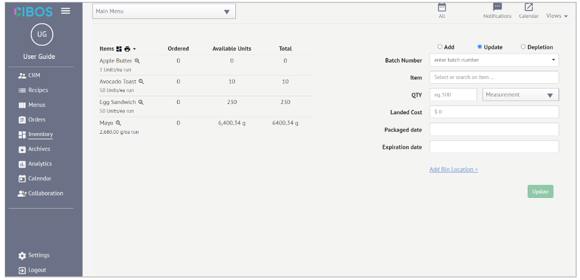7.1. Raw Materials vs. Items¶
In Cibos, Raw Materials are combined together to create Menu Items. You can swap between the two Inventory categories to keep track of on-hand Raw Materials and Batched Recipe Items. There are two ways to swap categories:
Inventory Icon
Below is the Items Inventory list. Click the Inventory icon directly right of the Items heading.
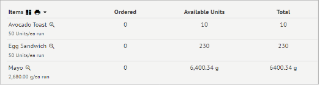This will swap to the Raw Materials Inventory list
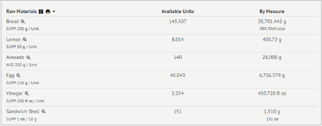
Views
In the top-right corner, click Views. From the drop-down menu, select Raw Materials Inventory or Items Inventory.
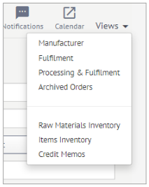
Raw Materials
The Raw Materials Inventory list displays the following information:
Raw Material Name
Supplier abbreviation & Supplier’s Unit of Measurement
Available Units
Available Units By Measure (in grams + other forms)
By clicking on the Magnifying Glass icon, you can look at the Lot Number, Expiration Date, QTY/UOM, and Supplier information for all Raw Materials currently in your Inventory.
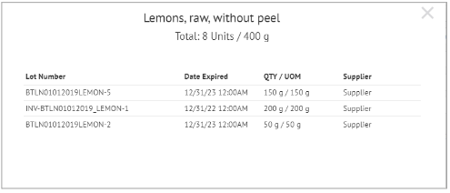
Items
The Items Inventory list displays the following information:
Item Name
Units per batch/run
Number of Units Ordered
Available Units
Total Units
By clicking on the Magnifying Glass icon, you can look at the Batch Number, Date Packaged, QTY/UOM, Expiration information, and Manufacturer information for all Items currently in your Inventory.
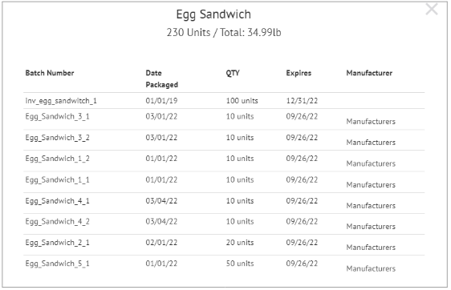
7.2. How to Add Items to Inventory¶
Ensure you have selected the Items View. Select Add on the right-hand side of the page. Then fill out the following fields:
Item – Select from the list of Menu Items
QTY – Enter the quantity of the Item being added to Inventory
Batch Number – A Batch Number is automatically generated but can be changed
Landed Cost
Packaged Date – Set using the pop-out calendar or enter it manually
Expiration Date – Set using the pop-out calendar or enter it manually
Click Add Bin Location +, and two new fields will appear:
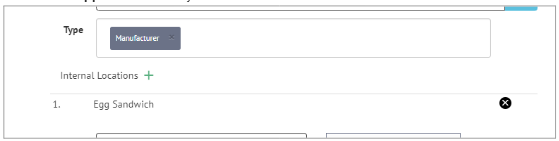
Location – Select a Location from the dropdown menu. The list is populated from your CRM’s Customers & Suppliers list.
Bin – Select a Bin from the dropdown menu. The list is populated from Internal Location(s) you set in that Manufacturer’s Customer/Supplier Record in your CRM.
Now click Add to finish adding Items to your Inventory.
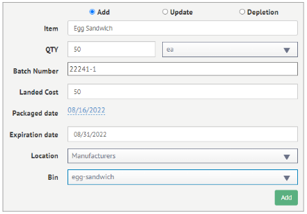
7.3. How to Update an Items Inventory¶
Select Update on the right-hand side of the page. Then fill out the following fields:
Batch Number – Select an existing Batch Number from the list
Item – Auto populates the Item that matches the Batch Number
QTY – Edit the quantity
Landed Cost – Update Landed Cost if needed
Packaged Date – Is pulled from the original entry but can be updated
Expiration Date – Is pulled from the original entry but can be updated
Click Add Bin Location +, and two new fields will appear:
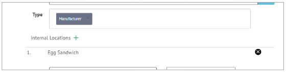
Location – Select a Location from the dropdown menu. The list is populated from your CRM’s Customers & Suppliers list.
Bin – Select a Bin from the dropdown menu. The list is populated from Internal Location(s) you set in that Manufacturer’s Customer/Supplier Record in your CRM.
If a Bin Location already exists for this entry, you can update it now.
Now click Update to finish updating the Inventory for this Item.
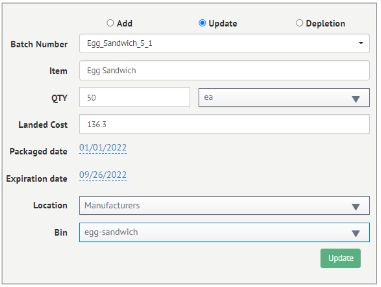
7.4. How to Deplete an Items Inventory¶
Select Depletion on the right-hand side of the page. Then fill out the following fields:
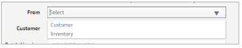
From – Choose if the Item is depleting from the Customer or Inventory
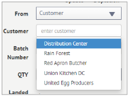
Customer – if you select Customer for the From field, choose the Customer from the drop-down list
Batch – Select an existing Batch Number from the list
QTY – Enter the quantity that is being depleted
Landed Cost – No changes can be made to Landed Cost during Depletion
Packaged Date – No changes can be made to Packaged Date during Depletion
Expiration Date –No changes can be made to the Expiration Date during Depletion
Now click Submit to finish depleting Items to your Inventory. If Customer was selected, you can choose Submit + Credit Memo to automatically create a Credit Memo for this Depletion event.
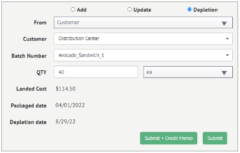
7.5. How to Add Raw Materials to Inventory¶
Ensure you have selected the Items View. Select Add on the right-hand side of the page. Then fill out the following fields:
Ingredient – Select from the list of Raw Materials
QTY – Enter the quantity of the Raw Material being added to Inventory
Lot Numbers – Enter the Lot Number
Landed Cost
Received Date – Set using the pop-out calendar or enter it manually
Expiration Date – Set using the pop-out calendar or enter it manually
Click Add Bin Location +, and two new fields will appear:
Location – Select a Location from the dropdown menu. The list is populated from your CRM’s Customers & Suppliers list.
Bin – Select a Bin from the dropdown menu. The list is populated from Internal Location(s) you set in that Manufacturer’s Customer/Supplier Record in your CRM.
Now click Add to Inventory.
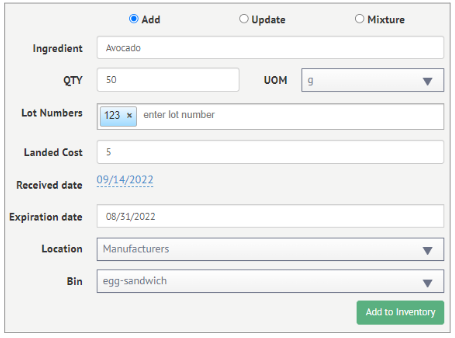
7.6. How to Update a Raw Materials Inventory¶
Select Update on the right-hand side of the page. Then fill out the following fields:
Ingredient – Search the Raw Material from the drop-down list
Lot Numbers – Select the Lot Number of interest
QTY – Edit the quantity
Landed Cost – Update Landed Cost if needed
Received Date – Is pulled from the original entry but can be updated
Expiration Date – Is pulled from the original entry but can be updated
Click Add Bin Location +, and two new fields will appear:
Location – Select a Location from the dropdown menu. The list is populated from your CRM’s Customers & Suppliers list.
Bin – Select a Bin from the dropdown menu. The list is populated from Internal Location(s) you set in that Manufacturer’s Customer/Supplier Record in your CRM.
Now click Update to finish updating the Inventory for this Item.
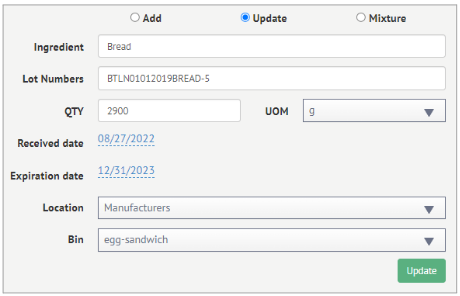
7.7. How to Mix Raw Material Lots¶
Select Mixture on the right-hand side of the page. Then fill out the following fields:
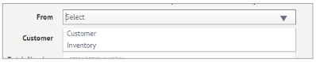
Ingredient – Search the Raw Material from the drop-down list
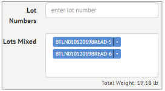
Lot Numbers – Select the Lot Numbers of interest
Lots Mixed – As you select multiple Lot Numbers, they are combined in the Lots Mixed field
Now click Create Mixture to create a Mixed Lot.
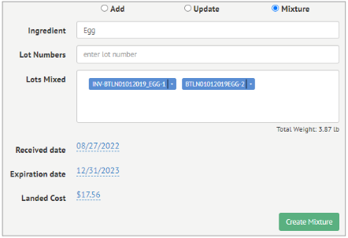
7.8. How to Print an Inventory List¶
To Print an Inventory List, either Items or Raw Materials, click the Printer icon next to the Items or Raw Materials heading. Then select Basic or Detail.
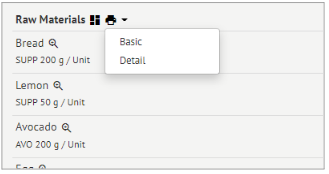